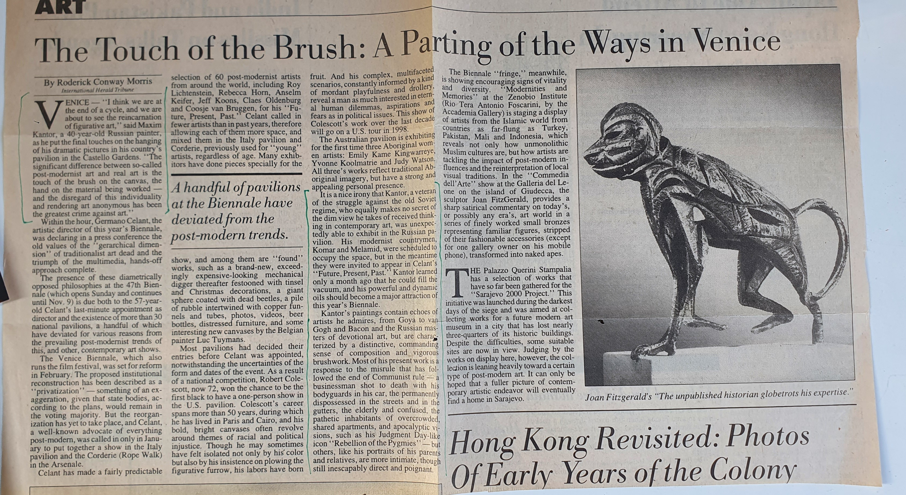

Stories and illustrations.
Shortlisted for the Big Book Award 2007.
Shortlisted for the National Bestseller Award and the Big Book Award. Translated into French (Feu Rouge, Louison Éditions, 2016), German (Rotes Licht, Paul Zsolnay Verlag, 2018), Italian, Dutch and Polish.
Also published in German, 2018.
Monographs, exhibition catalogues and critical studies. To be updated.
